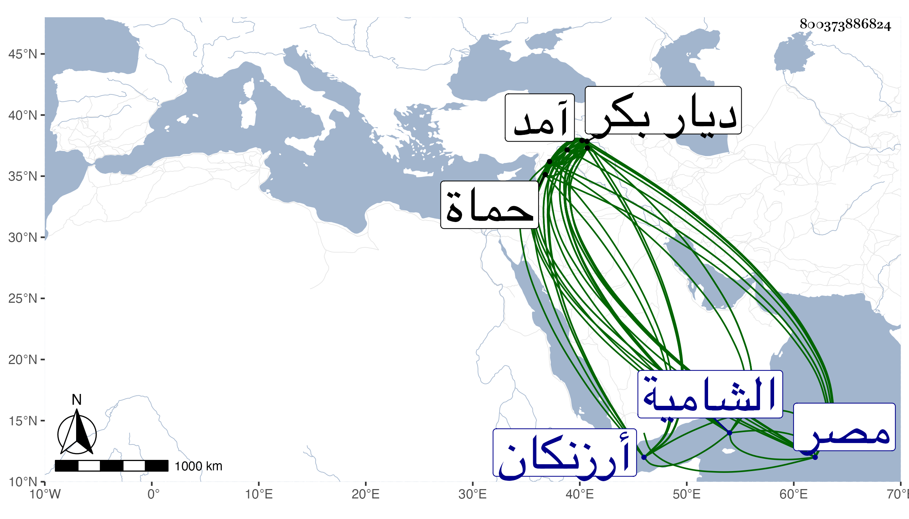

0902Sakhawi.DawLamic.ITO20230111-ara1.EIS1600.800373886824
Biography ID: 800373886824
315
جهان كير بن علي بك بن عثمان المدعو قرا يلك بن قطلو بك صاحب آمد وماردين وأرزنكان وغيرها . ولد بديار بكر في حدود العشرين وثمانمائة تقريبا ونشأ تحت كنف أبيه وجده وقدم مع والده إلى الديار المصرية ، وأنعم عليه بامرة حلب فتوجه اليها وأقام بها مدة إلى أن ولاه الظاهر جقمق الرها ، وعظم وكثرت جنوده ثم ملك آمد بعد موت عمه حمزة بعد حروب ثم أرزنكان ثم ماردين وغيرها إلى أن صار حاكم ديار بكر وأميرها وحينئذ أظهر الخلاف على الظاهر وضرب بعض بلاده وانضم إليه بيغوت الأعرج نائب حماة ومن شاء الله وبينما هو كذلك طرقه جها نشاه الماضي قبله فشتت شمله ومزق عساكره ، فلما ضاق الامر على صاحب الترجمة أرسل بأمه إلى البلاد الحلبية تستأذن نواب البلاد الشامية وهم بأجمعهم بحلب إذ ذاك في قدومها إلى الديار المصرية لاسترضاء السلطان على ولدها وكان قد أرسل قبل ذلك بولده يسأل الدخول تحت الطاعة فمنعوها فرجعت إلى آمد وفي غضون ذلك أرسل بأخيه حسن في شرذمة من عساكره إلى عمه حسن بن قرا يلوك وهو في عسكر كثيف من عسكر جهانشاه فظفر عمه به فقتله وبعث برأسه إلى أخيه صاحب الترجمة بعد أن قتل حسن المقتول جماعة من عسكر جهانشاه الذين كانوا مع عمه ولما بلغ ذلك جهانشاه غضب واشتد حنقه وقدم إلى آمد فحاصرها وجهان كير بها
